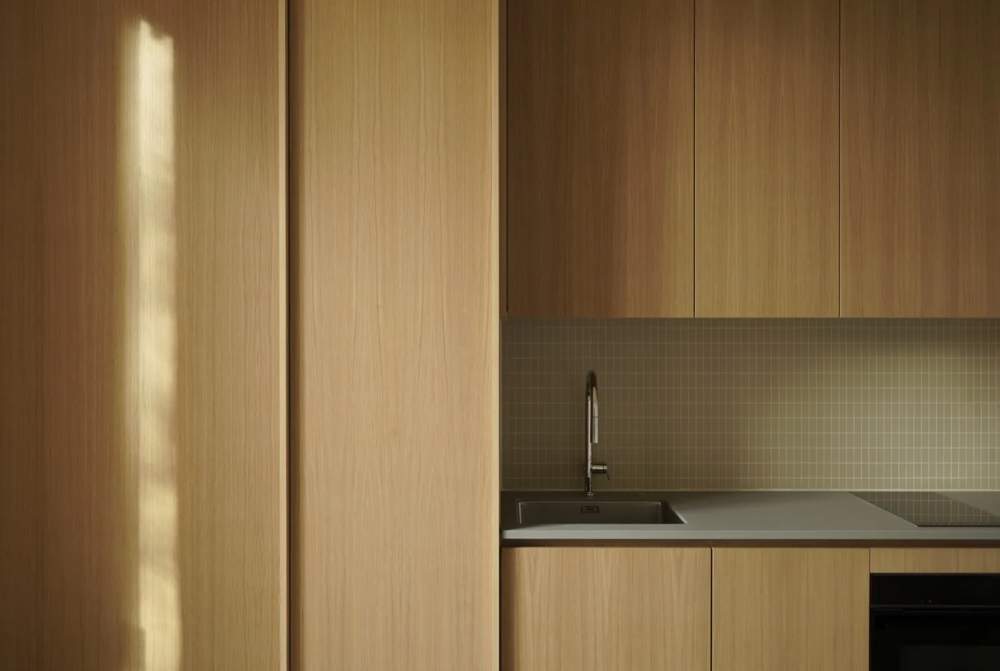

Accueil · Équipe
Une petite équipe,
un suivi direct.
Du premier croquis à la réception du chantier, votre projet est suivi par les mêmes personnes, sans intermédiaire.
L'atelier
Trois mains, un atelier.
Une structure volontairement réduite, pour garder l'écoute, la réactivité et la qualité d'exécution d'un suivi rapproché.
PL
Philippe Le Roy
Architecte EPFZ · REG A
Architecte EPFZ · REG A
VR
Valentin Rey
Architecte EPFL · REG A
Architecte EPFL · REG A
OL
Oliver Lutjens
Apprenti, 3ᵉ année
Apprenti, 3ᵉ année